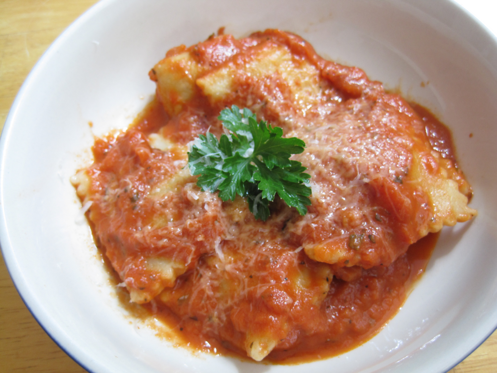
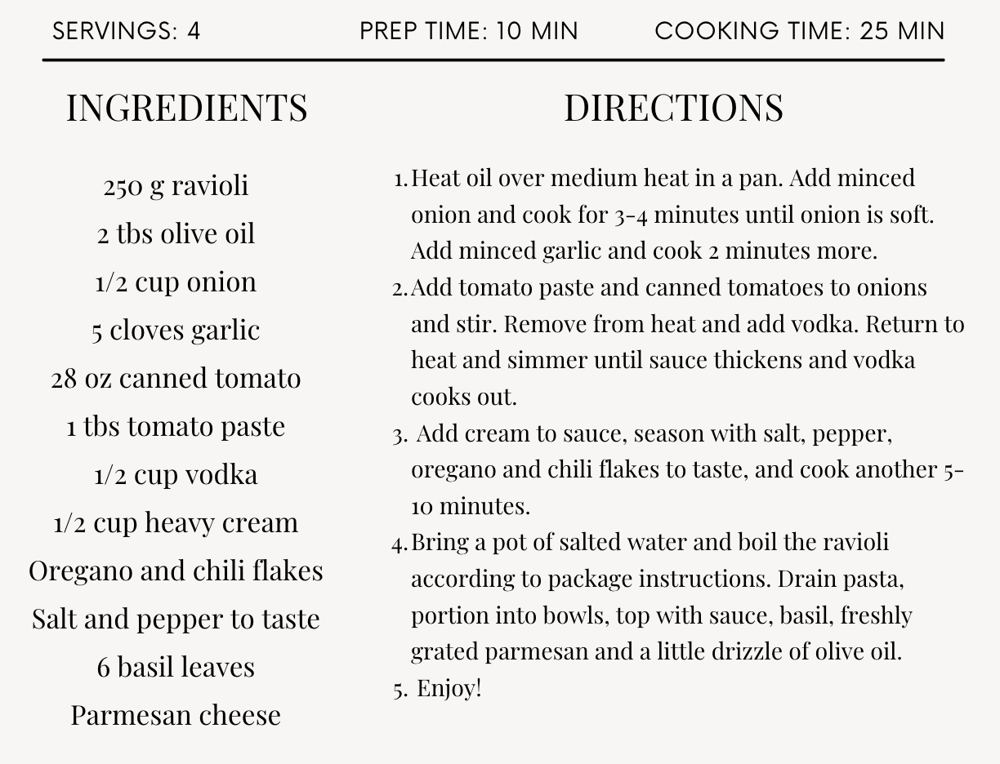

Porcini Mushroom and Truffle Ravioli with a Tomato Vodka Sauce
Friday, September 9,2022
Review: Pasta is a simple dish yet so complicated. The ingredients are very basic, tomoto paste, onions, ravioli, heavy cream, seasoning and vodka. The biggest challange in creating a dish like this is timing and technique. The sauce itself was amazing.
The slightly burnt tomato pure made a huge difference in adding not only texture but flavor to the dish. The sauce itself was a right balance of tangy and creamy. The ravioli was a bit overcooked. Maybe reducing the cooking time and adding it to the sauce al dante is a better idea.
The truffle stuffing inside the ravioli did clash with the tanginess of the tomato but the cream in the sauce did help compliment both flavors. The dish would recieve a 7.5/10.

View the recipe here!
